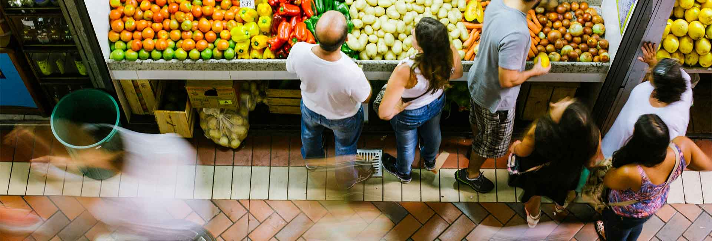

Rumo ao centenário
Chegou o centenário. Vamos celebrar essa história!
Um século de encontros
A história continua
com a gente.
Tem história no balcão, na conversa e nos sabores que ficam na memória. O Mercado Central é feito de quem trabalha, de quem visita e de quem sempre volta.
Rumo aos 100 anos, celebramos tudo o que nos trouxe até aqui — e os encontros que ainda estão por vir.
Conheça a nossa história
O próximo capítulo
Por dentro do centenário
Os primeiros passos de uma grande celebração.
Uma nova marca.
A mesma essência.
A história continua com a gente. A identidade dos 100 anos celebra o Mercado Central e abre caminho para o próximo capítulo dessa história.
Acompanhe aqui as próximas novidades da celebração.
Encontros para celebrar
O que vem por aí
Estamos preparando essa celebração.
A programação especial será divulgada aqui, com datas, horários e detalhes de cada atividade.
Quem caminha com a gente
Parceiros dessa história
Os patrocinadores e apoiadores do centenário serão apresentados aqui após a confirmação.
Em breve